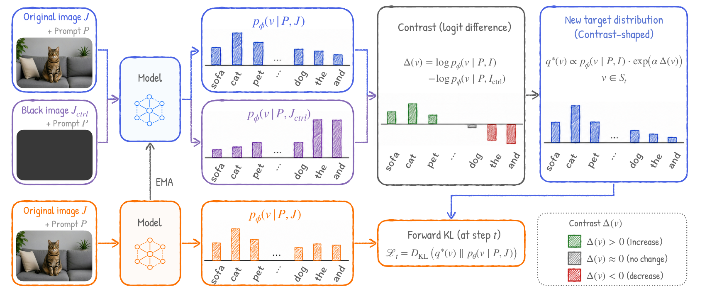
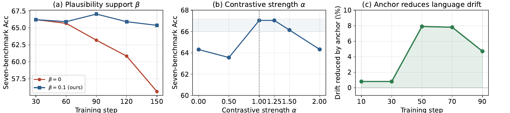
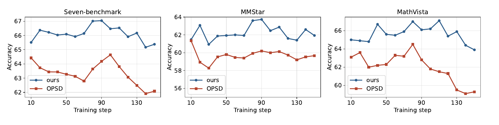

Abstract
On-policy self-distillation (OPSD) is promising as it removes the external teacher required by on-policy distillation (OPD), yet it still needs asymmetric information between teacher and student to ensure that the self-teacher provides a stronger learning signal than the student. Existing methods create this asymmetry either through privileged answers or visual evidence. We ask whether both can be removed, yielding a simpler form of OPSD driven purely by input conditioning.
For this purpose, we propose Visual Contrastive Self-Distillation (VCSD), which converts image-content removal into an on-policy self-distillation signal. At each student-generated response prefix, the EMA teacher produces two next-token distributions under the same prompt and prefix — one conditioned on the original image and the other on a content-erased control. Their token-wise log-probability difference highlights candidates whose likelihood is specifically increased by the instance-level visual content. We use this contrast to sharpen the teacher's original-image distribution within its plausible support, and distill the resulting full-distribution target into the student.
Using the ViRL39K dataset, VCSD consistently outperforms matched OPSD across Qwen3-VL and Qwen3.5 models. For example, on Qwen3-VL it improves the seven-benchmark aggregate from 62.27 → 67.04 at 2B, 71.30 → 73.16 at 4B, and 72.51 → 76.26 at 8B. Furthermore, VCSD requires no external teacher, privileged answers, visual-evidence signals, reasoning traces, or additional inference-time cost.
- No external teacher
- No privileged answers
- No extra inference cost
How VCSD works

Overview of VCSD. At each student-generated prefix, the EMA teacher contrasts next-token distributions under the original image and a content-erased control. The contrast sharpens the plausible original-image distribution to form the target, which is distilled into the student via forward KL. The response prefix is omitted for clarity.
At each response prefix, VCSD runs the same EMA teacher twice — on the original image $J$ and on a black content-erased control $J_{\text{ctrl}}$ — and takes the token-wise log-probability difference:
$$\Delta_t(v) = \log p_\phi(v \mid P, J, y_{<t}) - \log p_\phi(v \mid P, J_{\text{ctrl}}, y_{<t}).$$
A positive $\Delta_t(v)$ marks tokens supported specifically by the visual content. Using the original-image prediction as a plausibility anchor, VCSD sharpens it by this contrast to form the target distribution that is distilled into the student with forward KL:
$$q_t^{\star}(v) \;\propto\; p_{\phi,t}^{J}(v)\,\exp\!\big(\alpha\,\widetilde{\Delta}_t(v)\big),\qquad v \in \mathcal{S}_t(\beta).$$
Equivalently, its log-score is $(1+\alpha)\log p_{\phi,t}^{J}(v) - \alpha\,\log p_{\phi,t}^{0}(v)$ — boosting the original-image evidence while subtracting the content-erased reference, over the plausible support $\mathcal{S}_t(\beta)$. The control is only a reference, never a target itself, and never used at inference.
Key takeaway: the target asymmetry on-policy self-distillation needs can come purely from input conditioning — the same teacher on the real image vs. a blacked-out control — with no privileged answers, no visual-evidence hints, and no external teacher.
Main results
Across six configurations (Qwen3-VL and Qwen3.5, 2B→9B), VCSD achieves the highest seven-benchmark aggregate, improving over both the base model and the matched answer-hint OPSD baseline. The advantage is broad — general perception (BLINK, MMStar), visual math (MathVista), fine-grained & high-resolution perception (V*, HRBench4K/8K), and hallucination (HallusionBench) — not driven by a single benchmark.
| Model | Base | OPSD | VCSD (ours) | Δ vs Base |
|---|---|---|---|---|
| Qwen3-VL-2B | 62.27 | 64.89 | 67.04 | +4.77 |
| Qwen3-VL-4B | 71.30 | 71.40 | 73.16 | +1.86 |
| Qwen3-VL-8B | 72.51 | 73.72 | 76.26 | +3.75 |
| Qwen3.5-2B | 68.61 | 66.18 | 71.51 | +2.90 |
| Qwen3.5-4B | 73.94 | 73.92 | 76.77 | +2.83 |
| Qwen3.5-9B | 74.97 | 74.73 | 79.24 | +4.27 |
Seven-benchmark average accuracy (Acc.); y-axis starts at 60 to emphasize differences — hover a bar for the exact value. VCSD improves every model over both the base model and the matched OPSD baseline; on Qwen3.5, OPSD gives no consistent gain while VCSD improves every tested scale.
Key takeaway: input-conditioned asymmetry is a stronger self-distillation signal than privileged-answer conditioning — VCSD beats matched OPSD at every scale, and improves every Qwen3.5 model where OPSD gives no consistent gain.
Analysis & ablations

Ablations (Qwen3-VL-2B). (a) Restricting shaping to the plausible support ($\beta=0.1$) stabilizes long-horizon self-distillation, while removing it ($\beta=0$) degrades steadily. (b) Performance peaks around $\alpha \in [1, 1.5]$ and is locally robust. (c) Anchoring to the original-image distribution substantially reduces language drift.
- Plausibility support matters. Because targets are recursively rebuilt from the updated model, the hard support constraint prevents accumulation of target distortion across self-distillation updates.
- Forward KL is the right divergence. It beats JSD (+0.79) and reverse KL (+2.27) on aggregate — mode-covering distillation preserves the full contrast-shaped target.
- The contrast is robust to the control. Black image, Gaussian noise, and Gaussian blur controls all perform similarly — removing instance-specific content is what matters, not the particular degradation.

Training dynamics. VCSD stays above OPSD at every evaluated step on the seven-benchmark aggregate and per-benchmark on MMStar and MathVista, and shows less late-stage degradation over the same training run.
Key takeaway: the gains come from contrastive shaping — and the plausibility support plus the original-image anchor keep long-horizon self-distillation stable and fluent, not just accurate.
What VCSD learns, token by token
A concrete example from MMStar. For the same generated response, each token is colored by its image-dependent contrast $\Delta(v)=\log p(v\mid I)-\log p(v\mid I_{\text{ctrl}})$ — warmer means the token's likelihood is raised more by the instance-level visual content. Base and OPSD share nearly identical patterns, whereas VCSD assigns stronger positive contrast to visual concepts (e.g. roof, shingles, awning) while suppressing less informative tokens. The bottom row isolates the extra image-dependent contrast VCSD learns over OPSD.
Token-level image-dependent contrast for one MMStar example — hover any token to read its exact $\Delta(v)$ (resize the window to reflow the tokens).
Key takeaway: the extra contrast VCSD learns is concentrated on image-grounded concepts (roof, shingles, awning), not spread uniformly across the sentence — evidence that contrastive shaping reallocates probability mass toward image-dependent tokens rather than amplifying existing language priors.
Why it helps
The conditioning contrast $\Delta_t(v)$ is a controlled approximation to the conditional pointwise mutual information between a candidate token and the observed image, with the content-erased prediction serving as a surrogate for the image-independent prediction. Maximizing it upweights tokens that stay informative about the image after accounting for textual context — encouraging the student to preserve image-dependent evidence while leaving visually insensitive tokens unchanged. Combined with the original-image anchor, this yields a conservative form of visual grounding: it amplifies visually supported distinctions only among tokens the teacher already considers plausible, rather than rewarding arbitrary image-sensitive outputs.
BibTeX
@article{liang2026vcsd,
title = {Visual Contrastive Self-Distillation},
author = {Liang, Yijun and Tian, Yunjie and Li, Yijiang and Jia, Yuqi and
Huang, Furong and Zhou, Tianyi and Fu, Di},
journal = {arXiv preprint arXiv:2607.21556},
year = {2026},
url = {https://arxiv.org/abs/2607.21556}
}